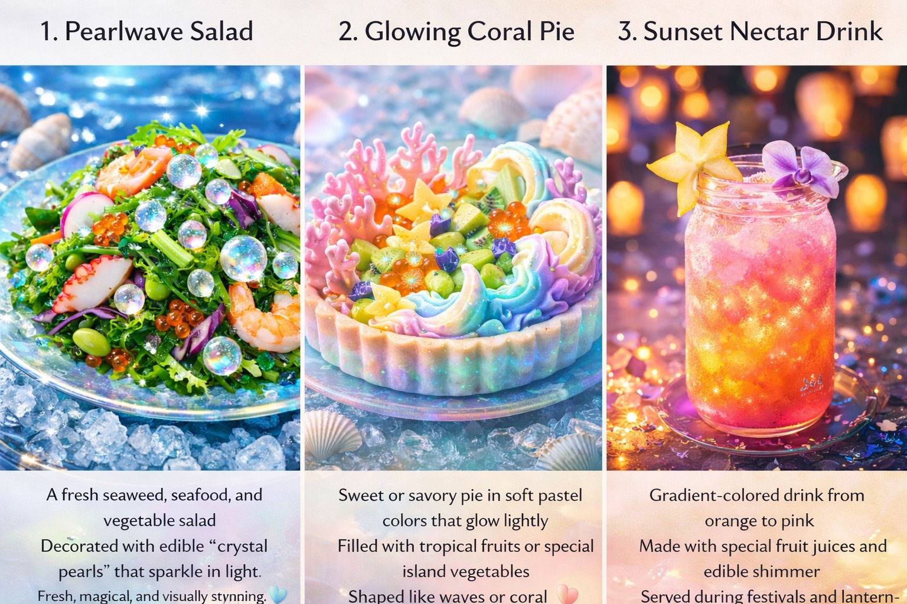

🏝️ Island Overview

A magical island near Japan, blending culture, water, ice, and sky adventures.The map of Eternyx Island shows a magical island near Japan, divided into unique zones. The southern coast is filled with glowing beaches and waterparks. The center features floating sky islands and crystal lakes. The northern area has snowy mountains for ice sports. Along the east side lies the cultural city with lantern-lit streets and the LuminaWave Festival plaza. The island is surrounded by clear blue oceans and hidden coves.
🎉 LuminaWave Celebration

A glowing festival of lights, water, music, and unity.LuminaWave is Eternyx Island’s most magical festival. The island lights up with glowing lanterns, water shows, music, and dancing. People wear traditional Eternal Flow garments, and the celebration takes place near the water, symbolizing unity, joy, and light across all seasons.
👘 Traditional Clothing

The Eternal Flow Garment is the traditional clothing of Eternyx Island. It is a flowing, elegant outfit inspired by water and light, worn in all seasons. It symbolizes unity, harmony, and the timeless magic of the island.
🏡 Daily Life & Architecture

Life on Eternyx Island is calm and community-focused. People live close to nature, spending their days working, creating, and celebrating together. Homes are built from wood, crystal, and water-resistant stone, with flowing shapes, open spaces, and light-filled interiors. Many roofs feature small gardens or gentle waterfalls, blending everyday life with the island’s natural magic..
🚩 Flag of Eternyx

The flag of Eternyx Island represents eternity, harmony, and unity. Its colors reflect the ocean and sky, while the central symbol shows the balance between nature, culture, and magic. The flag is flown during festivals and important celebrations, symbolizing pride and togetherness across the island.

Eternyx Island is known for three traditional foods. Pearlwave Salad is a fresh dish inspired by the sea, symbolizing purity and balance. Glowing Coral Pie is a colorful baked food enjoyed during celebrations. Sunset Nectar is a signature drink with warm, glowing colors, shared during festivals and gatherings.